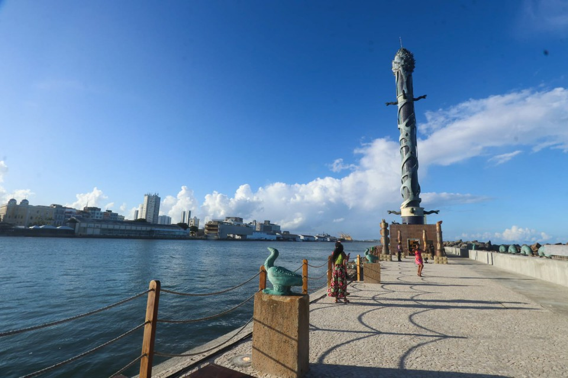
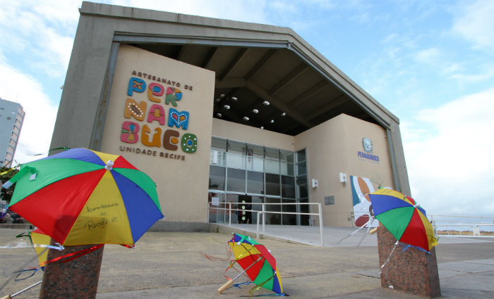

Parque das Esculturas Francisco Brennand
O Parque das Esculturas é uma instalação a céu aberto sobre o molhe do porto, composta por 90 obras do artista plástico Francisco Brennand. Destaque para a imponente Coluna de Cristal, com 32 metros de altura.
Centro de Artesanato de Pernambuco
O Centro de Artesanato é um espaço dedicado à cultura popular e ao artesanato pernambucano. Lá você encontrará peças únicas, como rendas, cerâmicas, esculturas e bordados.
